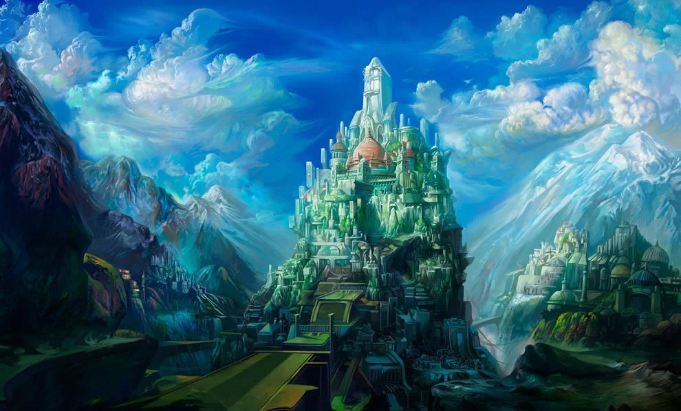

Overview of the Final Project
For the final project I decided to create a simple blog that will serve as a personal creative diary that will help organizing most of the ideas that I have regarding storytelling, concept art, character design and world building.

I have been always interested in all forms of storytelling this is why I studied History in Spain and right now I am currently studying Digital Media. I have always been fascinated with this combination between historical references and the creation of immersive fictional environments in which we can explore the world, experience new sorts of adventures, create our own stories and be part of them
After reading JRR Tolkien and other fantasy/sci-fi authors I decided that I wanted to have my own creative personal diary that would help me organize my own ideas, see my own personal progress and maybe show all the art that I have been creating after moving to Germany
Which is actually very basic but still serves as an interesting way to build up my professional profile in this field
Since it is a challenging process, I decided to develop my own blog as a final project that will serve as a space where I can show not only what I am working on right now but also reflect on the process itself
It can be see as a prototype of a portfolio using my current knowledge and incorporating new approaches
Main ideas and concepts
After a long while thinking about my own personal process, I decided that it would be great to start a small project regarding my current skills. Therefore, I decided that the best idea for this project to be developed was to create a small blog that would serve as a portfolio. I had once a small blog where I used to put a lot of content there related to historical stuff or even my own personal ideas so I thought that it would be great to program my own blog but for other reasons
I always struggled with finding references or exercises to learn how to properly draw or to understand the whole world of the concept art field, so a blog that would help me structure this could also serve as a way to expand my knowledge and my interests
Also, as a kid I have always found fascinating the way we can create new worlds and stories through video games or other forms of media. I have been always heavily inspired by authors such as Tolkien or games like RuneScape

These forms of media, either literature, films or games, had a great impact on me which made me work on my own personal project: the Chronicles of Gernesk, which I have been developing since I was 12 years old
In the beginning I thought I could only undertake this project as a series of books but currently I am changing the whole concept trying to draw my own characters, learn how to design my own world
General structure
I haven't thought much of how the structure would be but let's say the main concept should be the following:
- Contextualization: main objectives and general overview
- Main topics that I will cover
- References and how concept art has shaped the different forms of storytelling in the media
- My own working process with images of what I have been doing
- Reflections throughout the process
In the end I will try to work as much as I can on developing the idea but let's say that I have a more clear structure and hopefully I will be able to learn all the necessary skills to not only make the corresponding blog but also to learn these abilities for this sort of portfolio
I also want this blog to be further developed in the future as it will serve as my own personal platform in which I will portray most of my reflections and work into this